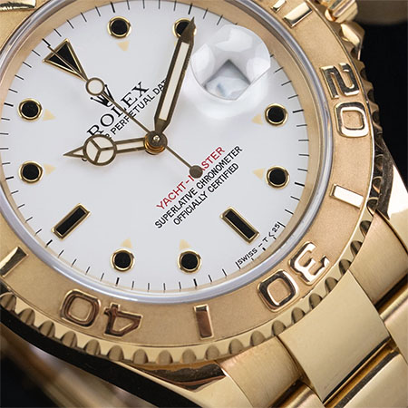
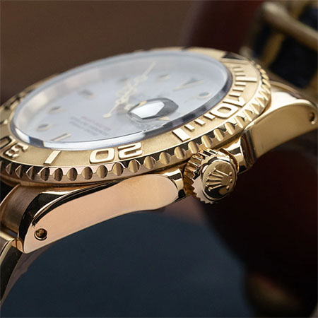
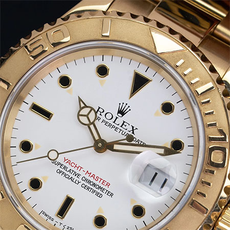

Product foto en basis info
Product info
Rolex Yacht-Master 16628
Hijs je zeilen! Of het nu op of buiten de kust is, de ontspannen luxe van de Yacht-Master is de perfecte metgezel. Wij zijn gespecialiseerd in de klassieke modellen die het merk Rolex gedurende vele decennia hebben gevormd. We hebben het over klassieke modellen zoals de Datejust, Submariner en Daytona die halverwege de 20e eeuw werden geïntroduceerd. In die zin is de Yacht-Master een beetje een vreemd eendje. Geïntroduceerd in de jaren 90, is het een cross-overmodel tussen de gereedschapshorloges van weleer en de glimmende luxe sporthorloges die Rolex tegenwoordig produceert. Het is een dunne lijn tussen cool en opzichtig, maar Rolex heeft goud gewonnen met de Yacht-Master. Deze ref. 16628 heeft een 18K geelgouden kast en Oyster-armband met een bijpassende gegraveerde 18K geelgouden bezel. De frisse witte wijzerplaat heeft een contrasterende rood gedrukte "Yacht-Master" tekst en een 18K geel-gouden uurmarkering met coole zwarte tritium vulling. Het horloge dateert uit 1995 en is in uitstekende staat, met een scherpe kast en strakke band.
€ 23.000
Extra foto's
  
Specificaties & eigenschappen
- Afmetingen Horlogekast
- 40 mm
- Kastmateriaal
- 18K geelgoud
- Wijzerplaat
- Wit
- Jaar
- 1995
- Referentie
- 16628